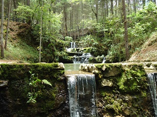
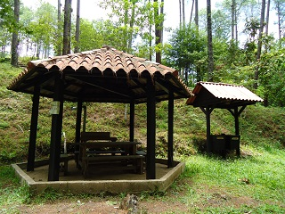
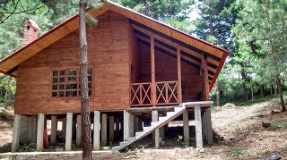
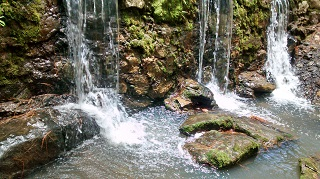
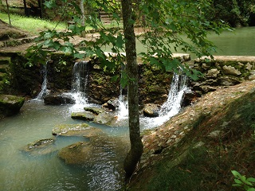

Es una especie de reserva forestal, que no patrocina el municipio, que pertenece a un solo dueño, el cual también tiene unas de orquídeas, pero el atractivo principal son las pozas artificiales que se forman por el paso de un arroyo que fue rescatado de la contaminación.
Las cascadas tienen dos pozas, la principal con una profundidad máxima de 2.5 mts, y la poza para infantes que alcanza una profundidad máxima de 1 metro.
Se encuentra a las afueras del municipio de Jitotol, Chiapas, a 2 km, de la cabecera municipal, sobre el tramo carretero federal 195 Jitotol-Bochil.
Se toma como referencia el arco o entrada principal de Jitotol, y tomar la carretera 195 con dirección a Bochil, un km despues de pasar la gasolinera san Martín, se verá un letrero que dice "Bienvenidos a las Cascadas San Martin".
Viniendo de Bochil, se llega un tramo en recta (que son escasos en este tramo), y a la izquierda la entrada al lugar.
En el lugar usted puede practicar actividades como:





posicione el mouse o de click sobre las imágenes
{kind=link}
{kind=link}
{kind=link}
{kind=link}
{kind=link}